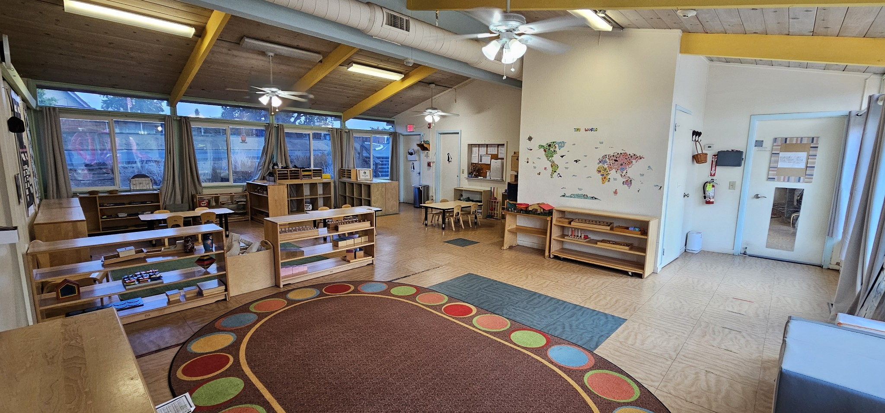

Our Center



Roots N Wings Montessori in Redwood City is a 2 classroom child care center tucked away and surrounded by nature. Child to teacher ratio is 7:1. Our teachers are all Montessori trained and have years of teaching experience. We have 1 classroom that can take 3-4 kids who are not fully potty trained as we have a credentialed Infant toddler teacher. We have mixed age group classes for both classrooms. Having an older child in class builds confidence and responsibility. The younger child emulates the older child helping each other learn, discover and challenge themselves with the prepared Montessori materials.
We have a monthly newsletter which includes our curriculum and topics in class. Parents are most welcome to participate in our school activities and lead short presentations of any topic they prepare with their child. We acknowledge that childhood memories are very important and we desire only to fill it with learning, respect, love,happiness and laughter. Looking forward to celebrations like MLK Day, Valentine’s Day,St. Patrick's Day, Easter egg hunt, Earth Day, May flower celebrations, Summer Solstice, 4th of July, National Ice cream Sandwich day, International Literacy Day, Halloween, Thanksgiving and of course December Holidays. We value the Montessori community and our goal is to be an extension of your family to find ways to reach your child’s full potential. Together we can be all guides in supporting and empowering each child to become the best version of themselves.
Mr. Roi Brigino has been a preschool teacher since 2012. He was completing his Bachelor's Degree in Computer Science from University of Perpetual Help in Manila before migrating to the US. He joined the US Army in 2010 and Finished basic training in Fort Leonard Wood, MO. When he came back to the Bay Area he completed 18 units of Early Childhood Education from Canada College. Mr. Roi was certified in AMI training courses for Early Childhood Education. He has 8 years of teaching experience in a Montessori classroom and is constantly attending seminars to update his Montessori teaching skills. He is a church choir leader and also youth ministry head for his congregation.

Ms. Debbie is originally from Brazil where she finished her Bachelor's Degree in Elementary Education and Teaching- Pedagogy from Faculdade De Ensino Regional Alternativa- FERA. She also completed her Associate in Science in Information Technology from Federal Institute in Brazil while completing her bachelor's degree. When she moved to California Ms. Debbie finished her Associate Degree in Early Childhood Education from Orange Coast College in Costa Mesa, CA. She is Teacher Certified in California and has 46+ ECE units with Infant toddler, Special Education, Adult supervision, and ECE management units. Ms. Debbie also is completing her Assistance to Infancy 0-3 years from Association Montessori Internationale with Montessori Institute of San Diego. Ms. Debbie is fluent in Spanish and Portuguese.

Ms. Nasreen Jamil is an immigrant from Afghanistan and has been in the country for 20+ years. She earned her Bachelor's degree at Kabul Polytechnic University. When she moved to California she completed her AA in Early Childhood Development at Ohlone College in Fremont. Ms. Nasreen was given amazing opportunities to work with children in different Montessori schools and Head starts in the Bay Area. She is a mother of two daughters both are completing their college degrees in the UCs.

Ms. Griselda Salazar was born and raised in the Bay Area. She is Mexican American and can speak both English and Spanish. She started her teaching journey in community college studying Early Childhood Education. During her time in college, she learned about the Montessori Method and was instantly a huge fan. She became extremely passionate about the teaching approach. She worked as a teacher at Outschool for a few years where she did more traditional teaching but over time realized that her interest in learning and practicing the Montessori Method is something she wants to pursue. Working and teaching at Roots N Wings Montessori was a wonderful opportunity to start her teaching career. She is currently taking her Montesori certificate at MTEC/San Francisco Bay Area and taking each day as a one big step of becoming a true Montessori guide.